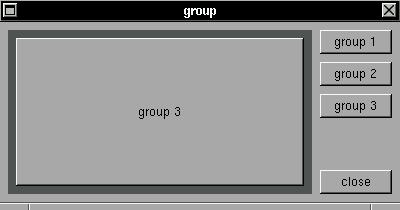

This is a new widget introduced in version 3.3 to enable the construction of x/y scroll box :) this widget work like a XSTEP window inside other XSTEP window. Multiple groups can be rotated with XRaiseWindow() function.SYNTAX
struct xtree *group_begin(x,y,w,h,color);EXAMPLE
group_end();int x,y,w,h,color
The function group_begin() draw a new group widget and set the XSTEP root to be this group, then all widgets will be created inside this group. The function group_end() just reset the XSTEP root to be the parent window of a group. Multiple groups can be created inside a window and multiple levels of groups can be created inside others groups. Groups can bem moved with XMoveWindow(), resized with XResizeWindow() and raised with XRaiseWindow().
#include <xstep.h> struct xtree *group1,*group2,*group3; void group1f(struct xtree *t) { XRaiseWindow(display,group1->win); } void group2f(struct xtree *t) { XRaiseWindow(display,group2->win); } void group3f(struct xtree *t) { XRaiseWindow(display,group3->win); } void xmain(int n,char *p[]) { window_create(0,0,400,180,"group"); group1=group_begin(8,8,-(16+72),-8,darkgray); button_create(8,8,-8,-8,"group 1",0); group_end(); group2=group_begin(8,8,-(16+72),-8,darkgray); button_create(8,8,-8,-8,"group 2",0); group_end(); group3=group_begin(8,8,-(16+72),-8,darkgray); button_create(8,8,-8,-8,"group 3",0); group_end(); button_create(-8,8+32*0,72,24,"group 1", group1f); button_create(-8,8+32*1,72,24,"group 2", group2f); button_create(-8,8+32*2,72,24,"group 3", group3f); button_create(-8,-8,72,24,"close", window_close); }
This example just create three groups and raise the selected group.